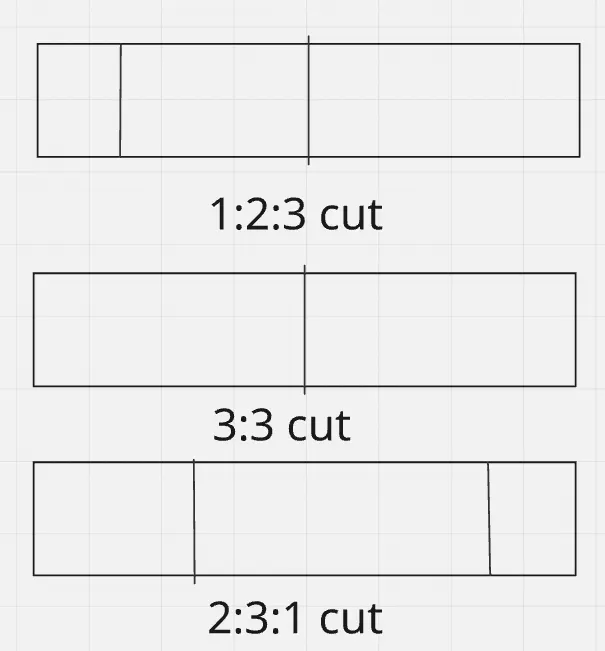

Dynamic Programming is a method to solve problems by combining sub-problems… blah blah blah.
DP is one of those topics I have heard everyone struggle with, from beginners to experts. It’s also one of the topics that can literally span every rating range from 800 to 3000+! 🤣
So, with that said, I believe that DP should have only one rule:
Never calculate anything twice.
With that, let’s go over some common ways DP shows up in problems.
1. Look Back / Look Ahead¶
Idea:
* If it’s trivial like dp[0] or dp[N], return a value in $O(1)$.
* Fetch the values of adjacent indices that are just ahead ($i+1$, $i+2$, …) or just behind ($i-1$, $i-2$) and add some variable or constant to it in $O(1)$.
Thus, if we process the indices in a specific order, for each index we can calculate the value in $O(1)$. Making the overall calculation be $O(N)$, where $N$ is the size of the input array.
Example 1: Fibonacci¶
The classic Fibonacci problem: $f(0) = 0$, $f(1) = 1$, while for all $n \ge 2$, $f(n) = f(n-1) + f(n-2)$.
The solution to this is trivial. Just create an array of size $N + 1$, set a[0] = 0, a[1] = 1, then run a loop from $i = 2$ to $i = N$, setting a[i] = a[i-1] + a[i-2].
Example 2: Stick Cutting¶
Consider you have a very long stick of dimension $1 \times N$. At each step, you can cut off a piece of size $1 \times 1$, $1 \times 2$, or $1 \times 3$ from the end. How many different ways can you completely cut the stick? Two arrangements are considered different if the number of cuts in each is different or if the $i$-th cut in one had a different size from the $i$-th cut in the other. Since the answer may be very large, output it modulo $10^9 + 7$.

Here let us define dp[i] as the number of possible arrangements with the first $i$ units of the stick not touched. It is trivial to see that we want dp[0], i.e., the entire stick is processed. It is also trivial to see that dp[N] = 1, as there is a single possibility (doing nothing when length is 0).
Now if we want to calculate for dp[i]:
* We can process sticks till ahead of $i + 1$ units, then cut a $1 \times 1$ unit.
* Same for $i + 2$ and $i + 3$.
Thus:
* If $i > N$, dp[i] = 0
* If $i == N$, dp[i] = 1
* Else dp[i] = (dp[i+1] + dp[i+2] + dp[i+3]) \pmod{10^9 + 7}
We can see that there is no over-counting happening here. Suppose you say that to go from $i + 3$ to $i$, we can also cut a $1 \times 2$ first and then a $1 \times 1$. But that is already covered in going from $i + 1$ to $i$. So our formula stands correct!
How to identify such a pattern:
* Value of input array is usually between $10^5$ to $10^6$.
* We want dp[0] / dp[N] and dp[N] / dp[0] is fixed per testcase.
* Write small test cases to figure out possible relations.
2. Knapsack Variants¶
The Knapsack problem is a standard DP problem that can be defined as:
* You have a “bag” of size $W$.
* You have “items”, each with a respective weight $w_i$, and optionally a value $v_i$.
* You can either take an item or not take it.
* Sum of all taken items should be $\le W$.
* Find the maximum sum of values under this constraint / find the number of ways to make a sum of weights / find if achieving a sum of weights is possible.
For simplification, we deal with 2 types of knapsack:
A. Finite frequency of items¶
Here each item can be used 1 or more times, but only finitely. Let’s first consider the case where each item has a weight and a value, all the weights are unique, and we have to find the maximum sum of values obtainable.
def knapsack(items: list[tuple[int]], W: int) -> int:
# initialise with zeroes
dp = (W + 1) * [0]
for w, v in items:
# iterate in [w, W] in reverse
for i in reversed(range(w, W + 1)):
dp[i] = max(dp[i], dp[i-w] + v)
# make sure to return max value, not dp[-1]
return max(dp)
Now if we have an item $(w_i, v_i)$ that has some frequency $f_i$, then repeatedly running the inner loop for the same item can be unnecessary. We can make an optimization here (Binary Lifting). Let’s take an example:
Consider $w_i = 3$, $v_i = 5$, $f_i = 10$.
So I can take the item once for weight 3 and value 5, or twice for weight 6 and value 10, or even 7 times for weight 21 and value 35!
Instead of 10 items, we can group them:
* $w_{i1} = 3$, $v_{i1} = 5$ (frequency 1)
* $w_{i2} = 6$, $v_{i2} = 10$ (frequency 2)
* $w_{i3} = 12$, $v_{i3} = 20$ (frequency 4)
* $w_{i4} = 9$, $v_{i4} = 15$ (frequency 3 - the remainder)
The sum of all weights = $3 + 6 + 12 + 9 = 30 = 3 \times 10$.
Now if we individually do 4 iterations with these weights, we can cover all the possibilities that are possible by 10 iterations of the original item!
This is because any $k \le 10$ can be made with a combination of these 4 weights.
* $k = 7 \rightarrow 1 + 2 + 4 = 7$
* $k = 8 \rightarrow 1 + 4 + 3 = 8$
* $k = 3 \rightarrow 1 + 2 = 3$
The pattern is quite simple: we can use powers of 2 to build any frequency, and then add an extra buffer frequency as needed.
def knapsack(items: list[tuple[int]], W: int) -> int:
# initialise with zeroes
dp = (W + 1) * [0]
for w, v, f in items:
factor = 1
while f > 0:
multiplier = min(factor, f)
w_, v_ = multiplier * w, multiplier * v
# iterate in [w_, W] in reverse
for i in reversed(range(w_, W + 1)):
dp[i] = max(dp[i-w_] + v_, dp[i])
f -= multiplier # Corrected line
factor *= 2
return max(dp)
B. Infinite supply¶
Consider you have an unlimited supply of coins of certain denominations (coins of 2, 5, 10, etc). Find out the number of ways you can make a given amount.
This is a classic Leetcode Problem (518. Coin Change II). For this, there is just one change to our initial logic: Reverse the inner loop!
Proof of correctness: Consider if I want to add a coin of denomination $k$ to an amount $x$ to make it $y$. If I process $y$ after $x$, I must have ensured that I have used the maximum possible amount of $k$ type coins. For $x = k$, this is trivial as you can only use a single coin to get that amount. By induction, it gets proven true for all $x > k$.
def change(self, amount: int, coins: List[int]) -> int:
dp = (amount + 1) * [0]
# not taking anything is a single possibility
dp[0] = 1
for c in coins:
# range is reverse of our finite case
for i in range(c, amount + 1):
dp[i] += dp[i-c]
return dp[amount]
(BTW, a more detailed tutorial on CP algorithms for Knapsack variants can be found here: cp-algorithms.com/dynamic_programming/knapsack.html)
How to identify such a pattern:
* Value of input array is usually between $10^3$ to $5 \times 10^3$.
* You have to maximize some value obtained from a subset of the input under constraints.
* “Take — not take” variants generally appear.
3. Sub-sequence DP¶
Consider this problem:
Given an array of $N$ integers, find the maximum sum of a subsequence where the adjacent elements are coprime. More formally, we have an array $A$ of $N$ integers. Consider a set of indices $1 \le i_1 < i_2 < \dots < i_k \le N$, where $1 \le k \le N$, such that for all $j$ in $[1, k)$, $\gcd(A[i_j], A[i_{j+1}]) = 1$. Find the maximal sum of any such set.
The idea for this is that we define dp[i] as the maximal sum of any sub-sequence that fulfills the condition and its last index is $i$. If we want to take the $i$-th element, we can choose a sub-sequence ending at some $j < i$, where $\gcd(A[j], A[i]) = 1$. Thus for each $i$ from $1$ to $N$, we check for all $j < i$, and if the condition is satisfied, we set dp[i] = max(dp[i], dp[j] + A[i]). And dp[i] has a default value of $A[i]$, i.e., only choosing that element (if no valid predecessor exists).
The more general version of this problem that usually appears is:
Find the maximum value (sum, product, etc.) over all sub-sequences of an array satisfying some condition $X$, and checking whether adding an element to the sub-sequence keeps it valid depends on the last element of the original sub-sequence.
General algorithm for this ($O(N^2)$ time complexity):
1. Iterate from $i = 1$ to $i = N$, where $N$ is the length of the array.
2. For each $i$, let dp[i] = value of taking just the $i$-th element.
3. Iterate for all $j < i$, and check whether adding the $i$-th element after the $j$-th element forms a valid sub-sequence. If yes, update the value of dp[i].
4. Return the maximum of dp[i] over all $i$.
Another problem:
Count all non-empty sub-sequences of an array of integers that are strictly increasing.
Here, it is trivial to see that any two sub-sequences that end at two different indices $i$ and $j$ ($i \neq j$) are different. So if we just found dp[i] = number of sub-sequences with the last index as $i$, and sum over $1 \le i \le N$, we get the required answer.
The solution algorithm ($O(N^2)$) is something like:
1. Iterate from $i = 1$ to $i = N$. Initialise dp[i] = 1 (single element sub-sequence).
2. For each $j = 1$ to $j = i - 1$, add dp[j] to dp[i] if $A[i] > A[j]$.
3. Return sum of all dp array.
How to identify such a pattern:
* Value of input array is usually between $10^3$ to $5 \times 10^3$. Sometimes harder versions which may use concepts from range queries have higher constraints.
* Optimal sub-sequence under some conditions.
* Sometimes it is related to counting all sub-sequences that satisfy a condition.
* Constraints allow for $O(N^2)$ approaches.
Practice Problems¶
Here are some awesome DP problems you can practice on Codeforces!
- CF 2031 A - Penchick and Modern Monument
- CF 2126 B - No Casino in the Mountains
- CF 2178 B - Impost or Sus
- CF 2225 C - Red-Black Pairs
- CF 2064 C - Remove the Ends
- CF 2229 C2 - We Be Flipping (Hard Version)
- CF 2233 C - Cost of a Bracket Sequence
- CF 2242 D - Two Digit Strings
- CF 2037 E - Kachina’s Favourite Binary String
- CF 2230 D - Good Schedule
That’s all for now! DP is a much, much vast topic, so I have to cover more of it soon, but till then keep coding!